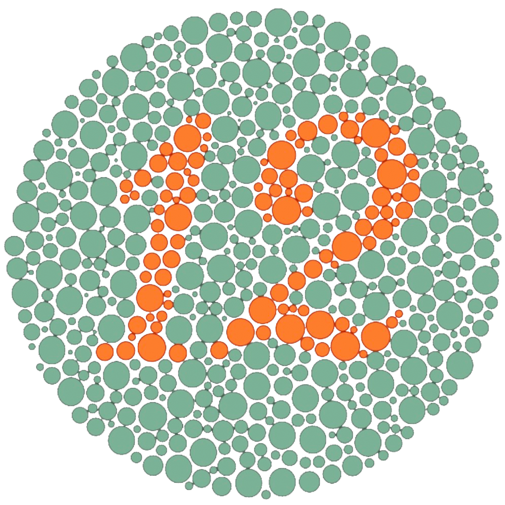

Dato curioso
Dato 1 de 10Cargando...
Inicia sesión para acceder a tus herramientas de apoyo cromático.
Asistente de apoyo cromático para daltonismo
Cargando...
La prueba te mostrará placas de Ishihara con números que debes identificar.

Nivel estimado: No concluyente
Tipo orientativo: --
Completa el test para ver una explicación personalizada.
Este test es solo una herramienta orientativa. No sustituye una evaluación médica profesional. Si el resultado indica posibles señales de daltonismo o tienes dudas sobre tu visión, se recomienda acudir con un optometrista u oftalmólogo.
Activa la cámara o sube una imagen para comenzar.
Esta simulación es aproximada y puede variar según la persona, la iluminación y la cámara del dispositivo.
| Tipo de visión | Color percibido | HEX simulado | Muestra visual |
|---|---|---|---|
| Sin color detectado todavía. | |||
Selecciona si quieres aplicar el color a A o B.
Presiona “Comparar colores” para analizar accesibilidad visual.
| Tipo de visión | Vista Color A | Vista Color B | Resultado |
|---|---|---|---|
| Sin comparación todavía. | |||
Toca el cuadro que tiene un color diferente.
Encuentra el cuadro con el tono ligeramente diferente.
El resultado aparecerá cuando termines o guardes la partida.
Cuando guardes resultados del test, detecciones o comparaciones, aparecerán aquí.